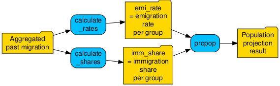

Overview
This vignette explains how to use propop::propop() to
carry out population projections for multiple regions, particularly for
subregions within a larger spatial unit (e.g., municipalities within a
canton). It highlights two key challenges that arise
when producing such projections and presents strategies for addressing
them.
- Obtain the required input data for spatial entities
below the level of cantons (got to Breaking
down projection parameters to subregions).
- Account for migration between subregions (go to Migration between subregions).
For more background and general information about the required
input data, see this
vignette).
Breaking down projection parameters to subregions
Numeric information about demographic processes such as births, migration, or deaths is an essential prerequisite for population projections. However, in Switzerland, this information is typically available only for cantons, not for spatial entities at smaller scales.
Supplying input data for spatial units at the sub-cantonal level (e.g. municipalities) can be straightforward when the data are expressed as rates (e.g. mortality rates): the simplest approach is to use the same figures for the subregions as for the canton, unless those figures are implausible for theoretical or empirical reasons.
The task is more demanding, however, if you want to adjust rates for subregions or if you need to downscale input data expressed as “numbers of people”. To address these challenges, consider the following options:
- To adjust the cantonal “number of people” estimates among
subregions, check the next two subsections.
- To adjust birth rates, you may find the package
propopbirthuseful.
- To adjust other rates, the procedure described in section Migration between subregions could be useful.
Distribution of people according to population size
A very simple approach to allocating canton-wide “number of people” estimates to subregions is to determine each subregion’s population size relative to the canton’s total population and distribute the numbers accordingly. Put simply, if a municipality represents 10% of the canton’s population, it would proportionally receive 10% of the canton’s incoming migrants. The approach described below is more sophisticated because it uses the spatial units’ shares for each demographic group, but the core idea is the same.
Let us look at a concrete, numerical example. The
spatial_unit column in the data set
ag_population_subregional (included in the package)
contains the population of five subregions at the end of 2025.
# Load package data
## Population of 5 subregions
data("ag_population_subregional")
## FSO data containing parameters for the entire canton
data("fso_parameters")As a starting point for the input parameters we use
the FSO parameters for the entire canton (fso_parameters).
The first step is to duplicate the existing parameters for each of the
five subregions. After this step, the rates and numbers for the
subregions are identical to those for the entire canton.
# Duplicate FSO parameters for five subregions
fso_parameters_sub <- fso_parameters |>
dplyr::filter(scen == "reference") |>
# duplicating rows 5 times
tidyr::uncount(5) |>
# create 5 subregions
dplyr::mutate(
spatial_unit = as.character(
rep(1:5, length.out = dplyr::n())
))To calculate the shares for the five subregions, we count the number
of people in each demographic group across all spatial units
(sum_n). Then share is obtained by dividing
the spatial unit’s n by the total number of people across
all spatial units in the respective demographic group
(sum_n).
# Calculate shares
df_population_shares <- ag_population_subregional |>
dplyr::mutate(sum_n = sum(n), .by = c(nat, sex, age)) |>
dplyr::mutate(share = n / sum_n)Now all required data are available. We can proceed to distribute the input variables expressed as “number of people” among the subregions.
Let us do this for immigration from other countries
(imm_int_n) and immigration from other cantons
(imm_nat_n). We first join the data frame containing the
projection parameters (fso_parameters_sub) and the data
frame containing the shares (df_population_shares). The
actual distribution involves only a single line per parameter, in which
the canton-wide numbers of immigrants (imm_int_n and
imm_nat_n) is multiplied by the share (share),
which in this simple approach is identical for both types of
immigration.
parameters_sub_size <- fso_parameters_sub |>
dplyr::left_join(
df_population_shares |>
dplyr::select("spatial_unit", "nat", "sex", "age", "share"),
by = c("spatial_unit", "nat", "sex", "age")
) |>
dplyr::mutate(
# Calculate number of incoming people per demographic group and spatial unit
imm_int_n_distr = imm_int_n * share,
imm_nat_n_distr = imm_nat_n * share
)Let us take a closer look at the result of this, focusing on
immigration from other countries. In the table below, we compare
imm_int_n – the original figures provided by the FSO for
the entire canton – with the sum of the distributed parameter
imm_int_n_distr. The table confirms that the
group_sum in the blue
column is equal to the original number of people
imm_int_n in the orange
column.
To proceed with the projection, we rename the columns containing the
distributed immigration (imm_int_n_distr and
imm_nat_n_distr) to imm_int_n and
imm_nat_n. Otherwise, propop() will not
recognise the parameters.
parameters_sub_size_clean <- parameters_sub_size |>
dplyr::mutate(
# Rename variables
imm_int_n = imm_int_n_distr,
imm_nat_n = imm_nat_n_distr
) |>
dplyr::select(-c(share, imm_int_n_distr, imm_nat_n_distr))Now we can run the projection:
propop(
parameters = parameters_sub_size_clean,
year_first = 2026,
year_last = 2027,
scenarios = "reference",
age_groups = 101,
fert_first = 16,
fert_last = 50,
share_born_female = 100 / 205,
population = ag_population_subregional,
binational = TRUE,
subregional = FALSE
)
#>
#> ── Running projection for 1 scenario(s). ───────────────────────────────────────
#> ℹ Process...
#> ✔ Processing completed in [448ms]
#>
#> ── Settings used for the projection ────────────────────────────────────────────
#> Scenario(s): "reference"
#> Year of starting population: 2025
#> Number of age groups: 101
#> Fertile period: 16-50
#> Share of female newborns: 0.488
#> Size of starting population: 743643
#> Projection period: 2026-2027
#> Nationality-specific projection: "yes"
#> Subregional migration: "no"
#> ────────────────────────────────────────────────────────────────────────────────
#> Projected population size by 2027:
#> - Scenario "reference": 759314
#> ════════════════════════════════════════════════════════════════════════════════
#>
#> ── Please note ─────────────────────────────────────────────────────────────────
#> ℹ As of propop v2.0.0, propop() uses tables instead of matrices to calculate projections.
#> ℹ The old function is still available as propop_legacy() but won't be further maintained.
#> ════════════════════════════════════════════════════════════════════════════════
#> # A tibble: 4,040 × 17
#> year scen spatial_unit nat sex age n_jan births mor_n emi_int_n
#> <int> <chr> <chr> <fct> <fct> <dbl> <dbl> <dbl> <dbl> <dbl>
#> 1 2026 reference 1 ch m 0 0 572. 1.85 0.931
#> 2 2026 reference 1 ch m 1 428 0 0.172 1.89
#> 3 2026 reference 1 ch m 2 446 0 0.175 1.93
#> 4 2026 reference 1 ch m 3 430 0 0.169 1.72
#> 5 2026 reference 1 ch m 4 445 0 0 1.69
#> 6 2026 reference 1 ch m 5 526 0 0 1.95
#> 7 2026 reference 1 ch m 6 527 0 0 1.86
#> 8 2026 reference 1 ch m 7 480 0 0 1.51
#> 9 2026 reference 1 ch m 8 496 0 0 1.40
#> 10 2026 reference 1 ch m 9 489 0 0 1.37
#> # ℹ 4,030 more rows
#> # ℹ 7 more variables: emi_nat_n <dbl>, imm_int_n <dbl>, imm_nat_n <dbl>,
#> # acq_n <dbl>, n_dec <dbl>, delta_n <dbl>, delta_perc <dbl>
Distribution of people according to past migration
The second approach to distributing “number of people” estimates among subregions uses historical migration records. One advantage of this approach is that it can differentiate between different types of migration (or any number-of-people input) and thereby enables each parameter to be adjusted independently (rather than using the same share for adapting all parameters). This is very useful, for example, if immigration from other cantons differs from immigration from other countries. To illustrate this approach, we use package data.
You can obtain such data by summarizing historical migration records.
The data frame includes two columns with historical immigration
(2022-2025) from abroad (hist_imm_int_n) and from other
cantons (hist_imm_nat_n) to the five regions. The table
below shows the result for a sample group:
A challenge is that records often vary considerably between years. If patterns are too uneven, future trends may become erratic, especially in groups with few people (e.g., small municipalities or small age groups).
There are at least three ways to mitigate this issue:
Consider multiple years and use an aggregated measure, such as the arithmetic mean or the median, as an estimate of each demographic group’s past migration.
Use larger age groups (e.g., 5-year or 10-year age groups). Moving from 1-year age groups to larger age groups increases the number of observations and smooths out irregular patterns.
Examine larger spatial units (e.g., several municipalities together). This is not shown in this vignette.
propop::calculate_shares() makes it easy to implement 1.
and 2. To use propop::calculate_shares(), you need to
provide a data frame containing imm_n, a column with the
number of immigrants per demographic group (e.g.,
hist_imm_int_n, as calculated above).
data_distr_hist_int <- ag_migration_subregional |>
calculate_shares(
imm_n = "hist_imm_int_n",
age_group = 5,
year_range = 2022:2025,
binational = TRUE,
two_sex = TRUE)Under the hood, propop::calculate_shares() computes the
historical sum for the requested
demographic group and years in each spatial unit
(sum_imm_n) and across all
regions (total_imm_n). On this basis, the proportion of people to be allocated to the
respective group and spatial unit is calculated
(imm_share = sum_imm_n / total_imm_n).
This table shows the result for a sample group in the five subregions:
From now on, the procedure is identical to that used in in the first
approach, which distributed the number of people according to population
size. That is, the share is multiplied by the numbers estimated by the
FSO for the whole canton.
# Calculate the historical shares for immigration from other cantons
data_distr_hist_nat <- ag_migration_subregional |>
calculate_shares(
imm_n = "hist_imm_nat_n",
age_group = 5,
year_range = 2022:2025,
binational = TRUE,
two_sex = TRUE)
# Add both shares to the data frame that holds the parameters for the whole canton
# Start from the original duplicated parameters
fso_parameters_sub_distr_hist <- fso_parameters_sub |>
dplyr::left_join(
data_distr_hist_int |>
dplyr::select(spatial_unit, nat, sex, age,
share_imm_int = imm_share),
by = dplyr::join_by(spatial_unit, nat, sex, age)
) |>
dplyr::left_join(
data_distr_hist_nat |>
dplyr::select(spatial_unit, nat, sex, age,
share_imm_nat = imm_share),
by = dplyr::join_by(spatial_unit, nat, sex, age)
) |>
# Compute immigration-`n` for subregions
dplyr::mutate(
imm_int_n_distr = imm_int_n * share_imm_int,
imm_nat_n_distr = imm_nat_n * share_imm_nat
)
As in the first version, we can inspect the result for the parameter
“immigration from other countries”. The table compares the figures
provided by the FSO for the whole canton (imm_int_n) with
the sum of the distributed parameter imm_int_n_distr.
Using the same sample group as above, it can be seen that
group_sum_int in the blue
columns is equal to the original number of people
imm_int_n in the orange
columns.
To proceed with the projection, we rename the columns containing
the distributed immigration values (imm_int_n_distr and
imm_nat_n_distr) to imm_int_n and
imm_nat_n. Otherwise, propop() will not
recognise the parameters.
fso_parameters_sub_distr_hist <- fso_parameters_sub_distr_hist |>
dplyr::mutate(
# Rename variables
imm_int_n = imm_int_n_distr,
imm_nat_n = imm_nat_n_distr
) |>
dplyr::select(-c(imm_int_n_distr, imm_nat_n_distr))Now everything is ready to run the projection:
propop(
parameters = fso_parameters_sub_distr_hist,
year_first = 2026,
year_last = 2027,
scenarios = "reference",
age_groups = 101,
fert_first = 16,
fert_last = 50,
share_born_female = 100 / 205,
population = ag_population_subregional,
binational = TRUE,
subregional = FALSE
)
#>
#> ── Running projection for 1 scenario(s). ───────────────────────────────────────
#> ℹ Process...
#> ✔ Processing completed in [392ms]
#>
#> ── Settings used for the projection ────────────────────────────────────────────
#> Scenario(s): "reference"
#> Year of starting population: 2025
#> Number of age groups: 101
#> Fertile period: 16-50
#> Share of female newborns: 0.488
#> Size of starting population: 743643
#> Projection period: 2026-2027
#> Nationality-specific projection: "yes"
#> Subregional migration: "no"
#> ────────────────────────────────────────────────────────────────────────────────
#> Projected population size by 2027:
#> - Scenario "reference": 759346
#> ════════════════════════════════════════════════════════════════════════════════
#>
#> ── Please note ─────────────────────────────────────────────────────────────────
#> ℹ As of propop v2.0.0, propop() uses tables instead of matrices to calculate projections.
#> ℹ The old function is still available as propop_legacy() but won't be further maintained.
#> ════════════════════════════════════════════════════════════════════════════════
#> # A tibble: 4,040 × 17
#> year scen spatial_unit nat sex age n_jan births mor_n emi_int_n
#> <int> <chr> <chr> <fct> <fct> <dbl> <dbl> <dbl> <dbl> <dbl>
#> 1 2026 reference 1 ch m 0 0 573. 1.85 0.932
#> 2 2026 reference 1 ch m 1 428 0 0.172 1.89
#> 3 2026 reference 1 ch m 2 446 0 0.175 1.93
#> 4 2026 reference 1 ch m 3 430 0 0.169 1.72
#> 5 2026 reference 1 ch m 4 445 0 0 1.69
#> 6 2026 reference 1 ch m 5 526 0 0 1.95
#> 7 2026 reference 1 ch m 6 527 0 0 1.86
#> 8 2026 reference 1 ch m 7 480 0 0 1.51
#> 9 2026 reference 1 ch m 8 496 0 0 1.40
#> 10 2026 reference 1 ch m 9 489 0 0 1.37
#> # ℹ 4,030 more rows
#> # ℹ 7 more variables: emi_nat_n <dbl>, imm_int_n <dbl>, imm_nat_n <dbl>,
#> # acq_n <dbl>, n_dec <dbl>, delta_n <dbl>, delta_perc <dbl>Migration between subregions
In propop, you may account for migration between
subregions by specifying this in the propop() argument
subregional =. You can choose between two mathematical
approaches, using either
- migration rates (
subregional = rate)
- or migration net numbers
(
subregional = net)
For both approaches, additional columns in the parameter data frame are required. We recommend the rate approach because the net approach may lead to negative numbers of people in very small groups.
The following two sections illustrate how to use the rate and net approaches.
Subregional migration rates
Preparation
To use the rate method in propop, the
parameter data frame must include emigration and immigration rates:
- The emigration rate (
emi_sub) is the typical proportion of a chosen demographic group at a given spatial resolution that moves away from a location each year. One way to determine this value is to calculate the annual emigration proportion for the group in past years and then take the mean of these annual rates. For example, if in the 2024 two out of ten people moved away and in the 2025 three out of ten people moved away, the estimate would be (0.2 + 0.3) / 2 = 0.25.
The functionpropop::calculate_rates()makes it easy to computeemi_sub.
- The immigration share (
imm_sub) represents, for each spatial unit, the proportion of all within-region migrants who settle there. This value can be calculated using past migration. The level of detail can range from low (e.g., one estimate per district for everyone in 10-year age groups) to high (e.g., a separate estimate for each age / sex / nationality group in every municipality). To implement this step, the functionpropop::calculate_shares()may be useful.
The required data and available functions to implement the rate approach are visualised in the following figure:

Redistribution in detail
When running propop(), the rate-based method requires
the parameters emi_sub (which corresponds to the more
generic emi_rate as calculated in
calculate_rates) and imm_sub (which
corresponds to the more generic imm_share as calculated in
calculate_shares). Using these parameters,
propop() reallocates individuals each year at the chosen
spatial and demographic resolution in three steps:
- The number of people who move to another location within the region
is computed based on
emi_suband the group’s size at the beginning of the year. This is usuallyn_jan. However, since the number of newborns is zero at the beginning of the year, the number of births per year is used as a basis for this group.
- These emigrants are added up across subregions and placed into a
“distribution pool”.
- The people in this pool are then distributed among the subregions
according to
imm_sub.
This procedure is repeated in each year of the projection.
Numerical example
To illustrate the rate approach, we start with aggregated past
migration records (2024–2025) for five regions in the Canton of Aargau.
We first use calculate_rates() to calculate the rate for
each demographic group and year (emi_rate_year) and the
mean of these shares over time (emi_rate). To make it easy
to follow the calculation, we aggregate into 2-year age groups and only
use two years.
data("ag_migration_subregional")
# Compute mean for each demographic group
emi_rate <- calculate_rates(
past_migration = ag_migration_subregional,
year_range = 2024:2025,
n_jan = n_jan,
births = births,
emi_n = hist_emi_sub_n,
spatial_unit = spatial_unit,
age_group = 2,
method = "mean"
) The table below shows the average emigration rate
(emi_rate) for 28- and 29-year old international men in the
five spatial units (highlighted in different colours).
We then use calculate_shares() to compute the proportion
of people to be allocated to the requested demographic groups and
spatial units based on past migration patterns (see also the section on
Distribution according to past
migration).
imm_share <- calculate_shares(
past_migration = ag_migration_subregional,
year_range = 2024:2025,
imm_n = "hist_imm_sub_n",
age_group = 2
) The table below shows the result for the group of 28- and 29- year
old international men. It includes the number of immigrants for each
2-year age group and spatial unit (sum_imm_n), the total
number of immigrants across all spatial units
(total_imm_n), and the share for each group and spatial
unit (imm_share).
Next we add the new parameters as emi_sub and
imm_sub to the data frame that contains the parameters (we
can re-use fso_parameters_sub_distr_hist).
parameters_rate <- fso_parameters_sub_distr_hist |>
dplyr::left_join(
emi_rate |>
dplyr::select(spatial_unit, age, nat, sex, emi_rate) |>
dplyr::distinct(),
by = dplyr::join_by(nat, sex, age, spatial_unit),
relationship = "many-to-many") |>
dplyr::left_join(
imm_share |>
dplyr::select(spatial_unit, age, nat, sex, imm_share) |>
dplyr::distinct(),
by = dplyr::join_by(nat, sex, age, spatial_unit),
relationship = "many-to-many") |>
# Use names expected in propop()
dplyr::rename(emi_sub = emi_rate, imm_sub = imm_share)Then we set subregional to rate and run
propop::propop():
propop(
parameters = parameters_rate,
year_first = 2026,
year_last = 2055,
age_groups = 101,
fert_first = 16,
fert_last = 50,
share_born_female = 100 / 205,
population = ag_population_subregional,
binational = TRUE,
subregional = "rate"
)
#>
#> ── Running projection for 1 scenario(s). ───────────────────────────────────────
#> ℹ Process...
#> ✔ Processing completed in [6.7s]
#>
#> ── Settings used for the projection ────────────────────────────────────────────
#> Scenario(s): "reference"
#> Year of starting population: 2025
#> Number of age groups: 101
#> Fertile period: 16-50
#> Share of female newborns: 0.488
#> Size of starting population: 743643
#> Projection period: 2026-2055
#> Nationality-specific projection: "yes"
#> Subregional migration: "rate"
#> ────────────────────────────────────────────────────────────────────────────────
#> Projected population size by 2055:
#> - Scenario "reference": 894040
#> ════════════════════════════════════════════════════════════════════════════════
#>
#> ── Please note ─────────────────────────────────────────────────────────────────
#> ℹ As of propop v2.0.0, propop() uses tables instead of matrices to calculate projections.
#> ℹ The old function is still available as propop_legacy() but won't be further maintained.
#> ════════════════════════════════════════════════════════════════════════════════
#> # A tibble: 60,600 × 19
#> year scen spatial_unit nat sex age n_jan births mor_n emi_int_n
#> <int> <chr> <chr> <fct> <fct> <dbl> <dbl> <dbl> <dbl> <dbl>
#> 1 2026 reference 1 ch m 0 0 570. 1.84 0.926
#> 2 2026 reference 1 ch m 1 428 0 0.172 1.89
#> 3 2026 reference 1 ch m 2 446 0 0.175 1.93
#> 4 2026 reference 1 ch m 3 430 0 0.169 1.72
#> 5 2026 reference 1 ch m 4 445 0 0 1.69
#> 6 2026 reference 1 ch m 5 526 0 0 1.95
#> 7 2026 reference 1 ch m 6 527 0 0 1.86
#> 8 2026 reference 1 ch m 7 480 0 0 1.51
#> 9 2026 reference 1 ch m 8 496 0 0 1.40
#> 10 2026 reference 1 ch m 9 489 0 0 1.37
#> # ℹ 60,590 more rows
#> # ℹ 9 more variables: emi_nat_n <dbl>, imm_int_n <dbl>, imm_nat_n <dbl>,
#> # acq_n <dbl>, emi_sub_n <dbl>, imm_sub_n <dbl>, n_dec <dbl>, delta_n <dbl>,
#> # delta_perc <dbl>Subregional net migration
If you want to use net migration numbers, the
parameter data frame must contain the column mig_sub.
mig_sub is the net migration between subregions (e.g.,
municipalities, districts) within the main superordinate projection unit
(e.g., a canton). mig_sub must be provided by the user
(e.g., by computing the median net migration over the past 10 years to
capture recent trends and carry them forward into the future).
The data for the example calculation is included in the package
(ag_migration_subregional).
To obtain such data, you may summarize population register records as we described in the section Distribution according to past migration).
First, we use calculate_shares() as a shortcut
to obtain the number of past emigrants and immigrants. This function
provides a convenient way to obtain the number of migrants for custom
age groups and year ranges.
# Historical subregional immigration
subregional_imm_share <- ag_migration_subregional |>
dplyr::select(year, spatial_unit, age, nat, sex, hist_imm_sub_n) |>
calculate_shares(
imm_n = "hist_imm_sub_n",
age_group = 5,
year_range = 2022:2025,
binational = TRUE,
two_sex = TRUE
)
# Historical subregional emigration
subregional_emi_share <- ag_migration_subregional |>
dplyr::select(year, spatial_unit, age, nat, sex, hist_emi_sub_n) |>
calculate_shares(
imm_n = "hist_emi_sub_n",
age_group = 5,
year_range = 2022:2025,
binational = TRUE,
two_sex = TRUE
)Then, we compute net migration by subtracting the aggregated
subregional emigration (hist_emi_sub_n) from the
subregional immigration (hist_imm_sub_n).
subregional_net_migration <- dplyr::full_join(
subregional_imm_share |>
dplyr::select(
spatial_unit, age, age_group, nat, sex, sum_imm_sub_n = sum_imm_n,
total_imm_sub_n = total_imm_n, imm_sub_share = imm_share
),
subregional_emi_share |>
dplyr::select(
spatial_unit, age, age_group, nat, sex, sum_emi_sub_n = sum_imm_n,
total_emi_sub_n = total_imm_n, emi_sub_share = imm_share
),
by = dplyr::join_by(spatial_unit, age, age_group, nat, sex)
) |>
# calculate net migration
dplyr::mutate(sum_mig_sub_n = sum_imm_sub_n - sum_emi_sub_n) Since the two values are based on aggregated data, no further
aggregation is required. We can add mig_sub as a column to
the parameters:
parameters_net <- fso_parameters_sub_distr_hist |>
dplyr::left_join(
subregional_net_migration |>
dplyr::mutate(mig_sub = sum_mig_sub_n) |>
dplyr::select(spatial_unit, age, nat, sex, mig_sub),
by = dplyr::join_by(spatial_unit, age, nat, sex)
)All required input files are available, and we can set
subregional to net and use
propop::propop():
propop(
parameters = parameters_net,
year_first = 2026,
year_last = 2055,
age_groups = 101,
fert_first = 16,
fert_last = 50,
share_born_female = 100 / 205,
population = ag_population_subregional,
binational = TRUE,
subregional = "net"
)
#>
#> ── Running projection for 1 scenario(s). ───────────────────────────────────────
#> ℹ Process...
#> ✔ Processing completed in [6.1s]
#>
#> ── Settings used for the projection ────────────────────────────────────────────
#> Scenario(s): "reference"
#> Year of starting population: 2025
#> Number of age groups: 101
#> Fertile period: 16-50
#> Share of female newborns: 0.488
#> Size of starting population: 743643
#> Projection period: 2026-2055
#> Nationality-specific projection: "yes"
#> Subregional migration: "net"
#> ────────────────────────────────────────────────────────────────────────────────
#> Projected population size by 2055:
#> - Scenario "reference": 894040
#> ════════════════════════════════════════════════════════════════════════════════
#>
#> ── Please note ─────────────────────────────────────────────────────────────────
#> ℹ As of propop v2.0.0, propop() uses tables instead of matrices to calculate projections.
#> ℹ The old function is still available as propop_legacy() but won't be further maintained.
#> ════════════════════════════════════════════════════════════════════════════════
#> # A tibble: 60,600 × 18
#> year scen spatial_unit nat sex age n_jan births mor_n emi_int_n
#> <int> <chr> <chr> <fct> <fct> <dbl> <dbl> <dbl> <dbl> <dbl>
#> 1 2026 reference 1 ch m 0 0 504. 1.63 0.819
#> 2 2026 reference 1 ch m 1 428 0 0.172 1.89
#> 3 2026 reference 1 ch m 2 446 0 0.175 1.93
#> 4 2026 reference 1 ch m 3 430 0 0.169 1.72
#> 5 2026 reference 1 ch m 4 445 0 0 1.69
#> 6 2026 reference 1 ch m 5 526 0 0 1.95
#> 7 2026 reference 1 ch m 6 527 0 0 1.86
#> 8 2026 reference 1 ch m 7 480 0 0 1.51
#> 9 2026 reference 1 ch m 8 496 0 0 1.40
#> 10 2026 reference 1 ch m 9 489 0 0 1.37
#> # ℹ 60,590 more rows
#> # ℹ 8 more variables: emi_nat_n <dbl>, imm_int_n <dbl>, imm_nat_n <dbl>,
#> # acq_n <dbl>, mig_sub <int>, n_dec <dbl>, delta_n <dbl>, delta_perc <dbl>